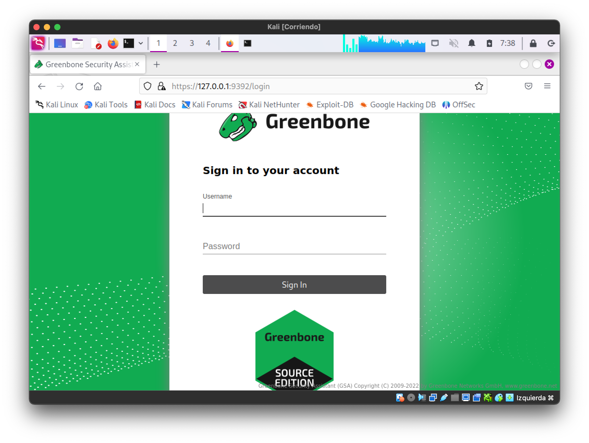
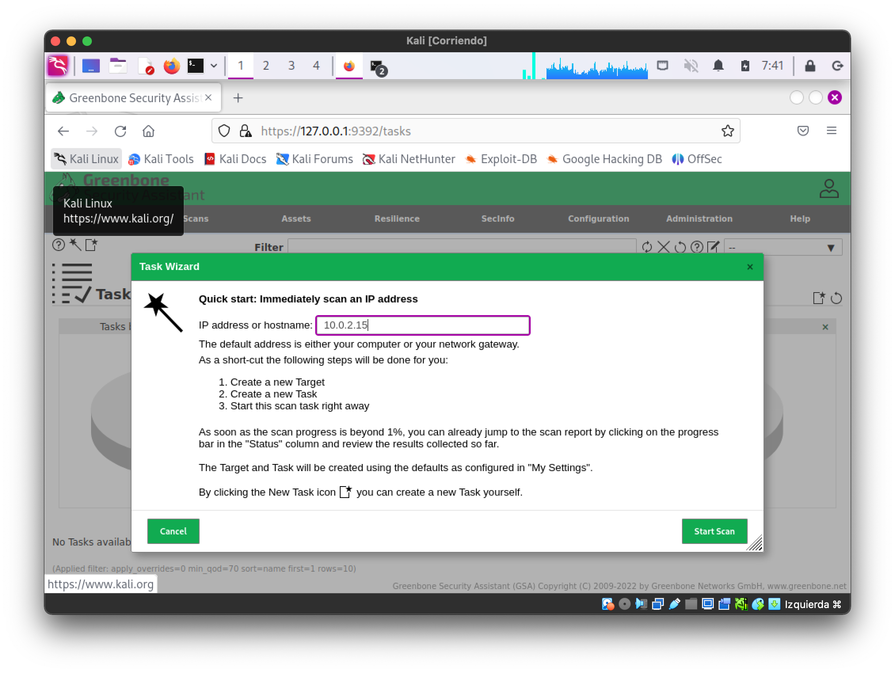
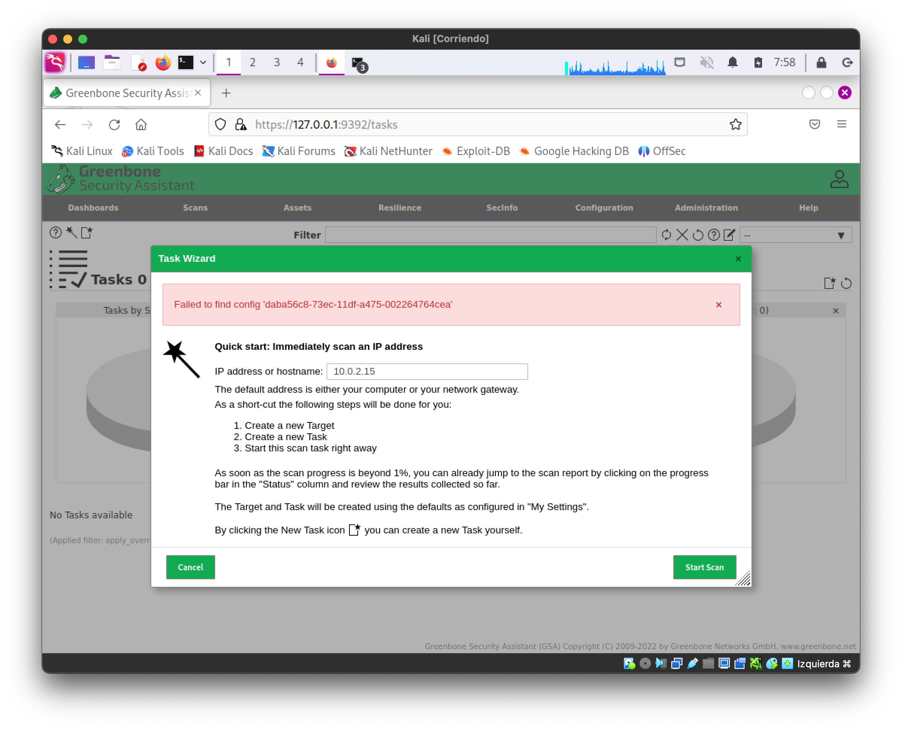

Auditoría de seguridad con GVM/OpenVAS¶
Greenbone Vulnerability Management (GVM), anteriormente conocido como OpenVAS, es una solución de código abierto diseñada para la gestión y evaluación de vulnerabilidades en redes y sistemas informáticos. Proporciona herramientas para identificar, clasificar y gestionar posibles brechas de seguridad, ayudando a las organizaciones a proteger sus infraestructuras contra amenazas conocidas. GVM es ampliamente utilizado por profesionales de seguridad para realizar análisis exhaustivos y asegurar que los sistemas estén actualizados y seguros frente a vulnerabilidades explotables.
Enunciado¶
En esta ocasión vamos a intentar usar GVM para auditar varias máquinas remotas, pueden ser tanto linux como windows. Para instalar la herramienta instalaremos una nueva máquina virtual con Kali Linux
Revisa la bibliografía antes de empezar.
Instala la herramienta GVM¶
Debido a que GVM es una herramienta que se ejecuta en una máquina distinta al objetivo que se desea escanear, es necesario disponer de otra máquina para utilizarla. En esta ocasión, se propone utilizar una máquina virtual en la que instalaremos la distribución Kali Linux para emplear la herramienta GVM.
Requisitos:¶
Mínimos:
- CPU Cores: 2
- Random-Access Memory: 4GB
- Hard Disk: 20GB free
Recomendados:
- CPU Cores: 4
- Random-Access Memory: 8GB
- Hard Disk: 60GB free
Actualización del sistema¶
Antes de empezar actualizaremos el sistema, es importante no omitir las actualizaciones del sistema, GVM no funcionará bien si no están disponible la última versión de la base de datos PostgreSQL:
Este proceso de actualización es largo. Se recomienda tomar una instantánea (snapshot) de la máquina virtual antes de continuar con la práctica.
Instalación y configuración de GVM¶
Para instalar y configurar GVM ejecutaremos
Para inicializar GVM:
Este paso lleva bastante tiempo. Al terminar la configuración obtendremos la contraseña del usuario, debemos anotarla. La salida por la consola será algo parecido a lo siguiente:
Si se recibe un error sobre la configuración de la base de datos consulta la sección de Posibles Problemas para actualizar la base de datos y después volver a intentar ejecutar el comando gvm-setup
...
[*] Checking Default scanner
[*] Modifying Default Scanner
Scanner modified.
[+] Done
[*] Please note the password for the admin user
[*] User created with password 'c13cc45b-a4a3-4e20-a765-8455f2c547f4'.
[>] You can now run gvm-check-setup to make sure everything is correctly configured
Podemos comprobar que todo está correctamente instalado mediante el comando:
Si todo ha ido bien, aparecerá algo similar a:
Puede aparecer algún error, se debe seguir las instrucciones indicadas en pantalla para corregirlo. Hay ejemplos en la sección de Posibles problemas.
Actualización de feeds¶
Una vez terminada la instalación y configuración inicial. Podemos ejecutar la actualizaicón de los feeds con las definiciones de las vulnerabilidades. Descargará la base de datos de vulnerabilidades y purebas, tardará un buen rato. Deberíamos actualizar los feeds periódicamente para mantener actualizada la base de datos de vulnerabilidades.
Es importante ejecutar como el usuario
_gvmlas actualizaciones de feeds, si no se hace así tendremos problemas al crear tareas posteriormente. Podremos corregir esta situación cambiando el Feed Owner (explicado en la sección de Posibles problemas)
Desde la interfaz web de GVM podemos consultar el estado de los feeds en Administration->Feed Status
Inicio y detención de GVM¶
Para iniciar GVM:
Veremos una salida similar a:
[sudo] password for test:
[>] Please wait for the GVM services to start.
[>]
[>] You might need to refresh your browser once it opens.
[>]
[>] Web UI (Greenbone Security Assistant): https://127.0.0.1:9392
Se debería lanzar el navegador Firefox de forma automática, si no lo hiciera podremos hacerlo de forma manual a través de https://127.0.0.1:9392

Recuerda que la cuenta es adminy la contraseña se generó al ejecutar el comando sudo gvm-setup.
Para detener el servicio (cuando no se quiera seguir utilizando):
Una vez instalado y configurado ya puedes usar la herramienta para escanear las vulnerabilidades de la máquina objetivo.
Utilización de GVM¶
Antes de iniciar el primer escaneo, Greenbone necesita analizar las fuentes de vulnerabilidades y almacenarlas en la base de datos PostgreSQL de gvmd; de lo contrario, no podrá iniciar o completar los escaneos sin errores. Este proceso se inicia durante la etapa de configuración, pero generalmente toma desde unos pocos minutos hasta varias horas para completarse, dependiendo de los recursos de tu sistema.
Pudes comprobar el estado de actualizaicón desde la interfaz web de GVM podemos consultar el estado de los feeds en Administration->Feed Status.
Crear una tarea¶
Debemos usar el menú scans->tasks, crearemos una nueva tarea utilizando el wizard (icono de la varita mágica) y después la ejecutaremos.

Preparación de máquina objetivo de escaneo¶
Instala algunos servicios en las máquinas que serán escaneadas antes de comenzar la auditoría. Puedes usar alguna de las máquinas virtuales que ya tengas de otras asignaturas, o puedes configurar una a propósito para realizar las pruebas.
Se sugiere usar una de las máquinas usadas previamente (AlmaLinux). En la máquina que será objetivo de la auditoría se debe instalar algunos servicios, tales como SSH, Apache, MariaDB, etc. De este modo tendremos algo que escanear con GVM.
SSH
Apache
Después de instalar Apache, puedes iniciar y habilitar el servicio con:
MariaDB Para instalar el servidor MariaDB:
Y luego iniciar el servicio:
Tareas a realizar¶
- Instala GVM
- Proporciona evidencias de la instalación, como capturas de pantalla del proceso o comandos ejecutados. Descripción de problemas encontrados y como se han resuelto.
- Escanea un mínimo de dos máquinas
- Las máquinas pueden tener diferentes sistemas operativos o servicios instalados.
- Asegúrate de contar con autorización para escanear estas máquinas.
- Muestra los resultados de los escaneos realizados
- Presenta los informes generados por GVM.
- Incluye capturas de pantalla y explica brevemente los hallazgos.
- Revisa los informes y comenta los problemas encontrados
- Analiza las vulnerabilidades detectadas.
- Propón soluciones o medidas de mitigación para cada problema identificado.
Advertencias y consideraciones éticas¶
- Importante: Asegúrate de tener autorización para realizar escaneos de vulnerabilidades en las máquinas objetivo. Realizar escaneos sin permiso puede tener implicaciones legales y éticas.
Posibles Problemas¶
Es posible encontrar problemas durante la instalación y configuración. Debes haber seguido los pasos descritos anteriormente:
- Haber actualizado el sistema.
- Configurar la nueva versión de la base de datos PostgreSQL
- Haber comprobado la corrección de la instalación.
- Actualizar los feeds.
- Arrancar GVM y esperar un buen rato para que se importen las nuevas vulnerabilidades.
Después sigue las indicaciones para solucionar problemas que encontrarás en el siguiente enlace: https://greenbone.github.io/docs/latest/22.4/kali/troubleshooting.html
Problema 1: Actualización de la versión de la base de datos PostgreSQL¶
Se puede solucionar siguiendo esta guía que se ha actualizado y traducido más adelante: https://greenbone.github.io/docs/latest/22.4/kali/troubleshooting.html
Actualización de Clúster PostgreSQL¶
Si encuentras un error relacionado con la versión de PostgreSQL al ejecutar sudo gvm-setup, debes actualizar la versión instalada de PostgreSQL a la versión más reciente requerida por el paquete nativo gvm de Kali. En el ejemplo a continuación se muestra la actualización de PostgreSQL versión 15 a la versión 16, pero estos pasos funcionarán para actualizar entre cualquier versión.
Error que indica la necesidad de actualizar el clúster de PostgreSQL¶
┌──(dev㉿kali)-[~]
└─$ sudo gvm-setup
[>] Starting PostgreSQL service
[-] ERROR: The default PostgreSQL version (15) is not 17 that is required by libgvmd
[-] ERROR: libgvmd needs PostgreSQL 17 to use the port 5432
[-] ERROR: Use pg_upgradecluster to update your PostgreSQL cluster
Para completar la configuración de la Greenbone Community Edition, debes:
- Migrar la configuración y los datos de PostgreSQL a un clúster actualizado.
- Configurar el nuevo clúster para que utilice el puerto
5432. - Instalar la extensión más reciente de
pg-gvm. - Corregir la discrepancia de COLLATION en la base de datos
gmvd. - Resolver dependencias pendientes.
- Completar la configuración de Greenbone Community Edition.
Advertencia: Considera el contenido de tu base de datos PostgreSQL existente y realiza copias de seguridad antes de proceder. Además, ten en cuenta que la actualización de paquetes de Kali Linux podría afectar el funcionamiento de tu sistema.
Puedes listar todos los clústeres PostgreSQL existentes usando el comando pg_lsclusters.
Listado de los clústeres PostgreSQL existentes¶
┌──(dev㉿kali)-[~]
└─$ pg_lsclusters
16 main 5432 online postgres /var/lib/postgresql/16/main /var/log/postgresql/postgresql-16-main.log
17 main 5433 online postgres /var/lib/postgresql/17/main /var/log/postgresql/postgresql-17-main.log
El resultado muestra dos clústeres en línea escuchando en los puertos 5432 y 5433. Si el clúster objetivo 16/main ya existe, debe eliminarse temporalmente para evitar el error Error: target cluster 16/main already exists. La existencia del clúster 16/main no significa necesariamente que el clúster antiguo ya haya sido actualizado; simplemente indica que un clúster para esa versión está presente.
Intentar actualizar a un clúster existente fallará.
┌──(dev㉿kali)-[~]
└─$ sudo pg_upgradecluster 16 main 17
Error: target cluster 17/main already exists
Para completar la actualización, primero se debe detener y eliminar el clúster 16/main.
Ahora actualiza el clúster antiguo al nuevo. El comando pg_upgradecluster migra las bases de datos del clúster antiguo al nuevo.
Sintaxis básica del comando pg_upgradecluster¶
Para actualizar tu clúster PostgreSQL, usa el siguiente comando:
Si no necesitas el clúster antiguo de PostgreSQL, elimínalo.
Y elimina los paquetes de PostgreSQL 15:
Ahora solo existe el nuevo clúster PostgreSQL.
┌──(dev㉿kali)-[~]
└─$ pg_lsclusters
Ver Cluster Port Status Owner Data directory Log file
17 main 5432 online postgres /var/lib/postgresql/16/main /var/log/postgresql/postgresql-16-main.log
2. Configurar el Puerto de PostgreSQL¶
El comando pg_upgradecluster generalmente configura la nueva versión de PostgreSQL para usar el puerto estándar 5432, requerido por Greenbone Community Edition. Sin embargo, si el puerto no se cambia automáticamente, debes modificarlo manualmente editando el archivo de configuración postgresql.conf y reiniciando el servicio systemd de PostgreSQL.
Para ubicar el archivo de configuración, ejecuta el siguiente comando:
Salida esperada:
┌──(dev㉿kali)-[~]
└─$ sudo -u postgres psql -c 'SHOW config_file'
config_file
-----------------------------------------
/etc/postgresql/16/main/postgresql.conf
(1 row)
Edita el archivo de configuración para cambiar el puerto de conexión a 5432 y reinicia PostgreSQL.
# - Connection Settings -
#listen_addresses = 'localhost'
-port = 5433
+port = 5432
max_connections = 100
Reinicia el servicio PostgreSQL:
3. Instalar la Extensión más Reciente de pg-gvm para PostgreSQL¶
Cuando se actualiza el clúster PostgreSQL a una versión más reciente, también se debe actualizar el paquete pg-gvm. Si no lo actualizas antes de ejecutar sudo gvm-check-setup, encontrarás un error al reconstruir la base de datos gvmd:
[*] Creating extension pg-gvm
ERROR: extension "pg-gvm" is not available
DETAIL: Could not open extension control file "/usr/share/postgresql/16/extension/pg-gvm.control": No such file or directory.
HINT: The extension must first be installed on the system where PostgreSQL is running.
Busca las versiones disponibles de pg-gvm:
Instala la versión correspondiente al PostgreSQL actualizado:
Problema 2: Errores al ejecutar gvm-check-setup¶
A continuación se detallan algunos posibles errores, como nota indicar la importancia de ejecutar la actualización de feeds con el usuario _gvm, si no se hace así se tendrá que cambiar el feed owner posteriormente.
Error 1¶
sudo gvm-check-setup
gvm-check-setup 23.11.0
Test completeness and readiness of GVM-23.11.0
Step 1: Checking OpenVAS (Scanner)...
OK: OpenVAS Scanner is present in version 23.9.0.
OK: Notus Scanner is present in version 22.6.4.
ERROR: No CA certificate file for Server found.
FIX: Run 'sudo runuser -u _gvm -- gvm-manage-certs -a -f'.
ERROR: Your GVM-23.11.0 installation is not yet complete!
Please follow the instructions marked with FIX above and run this
script again.
Tal como indica el error, ejecuto el siguiente comando para corregirlo:
Error 2¶
Vuelvo a comprobar la instalación con sudo gvm-check-setup y obtengo otro error:
sudo gvm-check-setup
...
ERROR: Directories containing the NVT collection not found.
FIX: Run the NVT synchronization script greenbone-feed-sync.
sudo greenbone-feed-sync --type nvt
Ejecuto el comando sugerido:
Error 3¶
Vuelvo a comprobar la instalación con sudo gvm-check-setup y obtengo otro error:
sudo gvm-check-setup
...
tep 4: Checking data ...
ERROR: SCAP DATA are missing.
FIX: Run the SCAP synchronization script greenbone-feed-sync.
sudo greenbone-feed-sync --type scap.
ERROR: Your GVM-23.11.0 installation is not yet complete!
Please follow the instructions marked with FIX above and run this
script again.
ejecuto el comanodo:
Error 4¶
Step 4: Checking data ...
OK: SCAP data found in /var/lib/gvm/scap-data.
ERROR: CERT data are missing.
FIX: Run the CERT synchronization script greenbone-feed-sync.
sudo greenbone-feed-sync --type cert.
ERROR: Your GVM-23.11.0 installation is not yet complete!
Please follow the instructions marked with FIX above and run this script again.
Tal como me indica el error, ejecutaré el siguiente comando para solucionarlo, pero usaré el usuario _gvm para evitar problemas de permisos. Las conexiones con el servidor remoto pueden fallar en algún momento, espera unos minutos y vuelve a intentarlo más tarde si te sucede.
Ahora, se debe volver a ejecutar el comando gvm-check-setup para comprobar si ahora está todo correcto.
Problema 3: Falta de pestañas en interfaz web¶
No has actualizado los paquetes antes de instalar, actualiza y sigue las instrucciones de este enlace: https://greenbone.github.io/docs/latest/22.4/kali/troubleshooting.html
Ve comprobando si está todo correcto con el siguiente comando que te irá indicando los elementos que todavía no estén correctos.
Problema 4: Problemas al crear una tarea¶
Failed to find port_list '33d0cd82-57c6-11e1-8ed1-406186ea4fc5'¶
Prueba a ejecutar el siguiente comando y vuelve a probar:
Cambio del Feed owner¶
Si alguna vez te encuentres con un problema como el siguiente, o algún error relacionado con "Feed owner" puedes solucionarlo con las instrucciones que tienes a continuación.

Parece que el problema está relacionado con el cambio de Feed Owner, que debería realizarse ejecutando los comandos gvmd con el usuario gvm
Si te sucede esto se puede solucionar siguiendo los siguientes pasos:
1 - Obtener el id de usario
Obtendremos algo similar a:
admin 5fac1198-14eb-4c95-b5ef-54db7d6b3ae1
En el siguiente comando debemos sustituir uid por el valor que hemos obtenido al ejecutar el comando anterior.
Con el resultado del ejemplo anterior el comando quedaría de la siguiente forma:
sudo runuser -u _gvm -- gvmd --modify-setting 78eceaec-3385-11ea-b237-28d24461215b --value 5fac1198-14eb-4c95-b5ef-54db7d6b3ae1
Reiniciamos GVM:
Bibliografía¶
- GreenBone Community Edition
- Greenbone Community Edition: Documentación
- Desarrollador Greenbone: https://www.greenbone.net/
- Docs productos greenbone: https://docs.greenbone.net/
- Foros Greenbone Community
Instalación Usando Kali Linux¶
- Instalación de Kali en VirtualBox
- GVM Kali Linux Install Guide
- GVM Kali Linux Troubleshooting
- GVM Kali Linux Tool Documentation
- GVM Feed Synchronization
Instalación docker¶
- Greenbone Community Containers:https://greenbone.github.io/docs/latest/22.4/container/index.html
Problemas¶
- Faltan opciones en WebUI: https://forum.greenbone.net/t/gui-not-showing-all-options-kali/19215/10
- Solución al problema al crear tareas (Kali purple): https://forum.greenbone.net/t/scan-config-cant-be-created-failed-to-find-config-daba56c8-73ec-11df-a475-002264764cea/8938/28
- Solución al problema al crear tareas usando Kali standard (Actualizar feeds y esperar): https://www.youtube.com/watch?v=DoNaGl1XHYE&t=470s
- Error al crear tarea: "Failed to find port ..."
Vídeo tutoriales GVM¶
Introducción a Greenbone:
Instalación usando docker (no recomendado):
Primer escaneo:
Configuración de filtros.